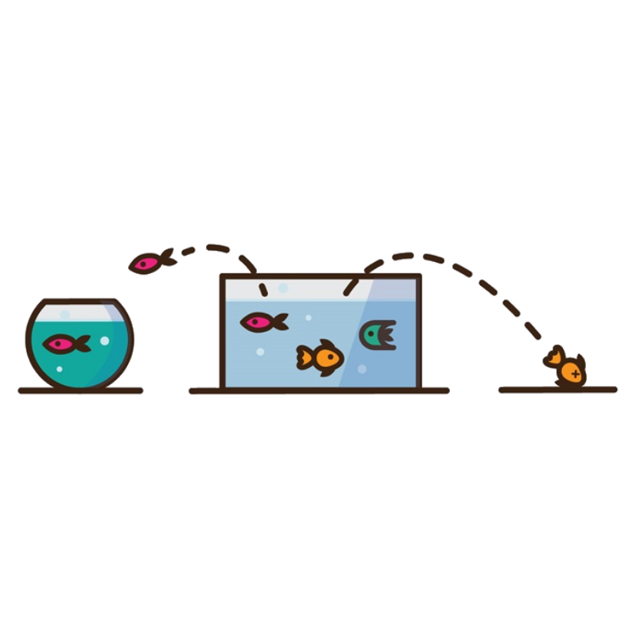

Sobre
Quem sou

Sou um amante da tecnologia e da inovação, apaixonado por empreendedorismo e negocios.
Busco aplicar conceitos estatisticos, econométricos e de programação bem como técnicas de
Big data analytics, Big data real-time analytics, Business analytics, Data engineer, A.I. e principalmente Machine Learning para gerar as melhores soluções para os problemas que envolvam Data Science e A.I.
Ah! E não basta apenas produzir boas análises ou construir bons modelos preditivos se não criarmos bons gráficos (Afinal, uma imagem vale mais do que mil palavras, não é mesmo?) e é por isso que tenho um cuidado especial nas etapas de visualização de dados e design de dashboards para garantir que cada estudo feito possa elucidar as respostas que os dados podem nos fornecer para cada desafio.
Perfil
Sigo o conceito T-Shaped, pois acredito que a capacidade de produzir soluções eficazes e eficientes dependem fundamentalmente dos conhecimentos previamente adquiridos.
- Nome: Honacleon P. do Ouro Junior
- Data de nascimento: 08 de Dezembro, 1998
- Profissão: Analista de Dados, Cientista de Dados
Skills
Estes são meus níveis de habiliade com as tecnologias mais populares no mercado atualmente:
Portfólio
Confira alguns dos meus projetos
Agora que já sabe um pouco sobre mim, gostaria de apresentar alguns dos projetos nos quais trabalhei. Por favor, sinta-se livre para analisá-los e caso tenha alguma dúvida, sugestão ou apenas queira trocar uma ideia sobre algum deles, não hesite em entrar em contato comigo!


National Institute of Diabetes and Digestive and Kidney Diseases
Neste projeto, iremos utilizar a linguagem Python, para prever com base em medidas de diagnóstico, se um paciente tem diabetes.
Data Science Project

Customer Churn in Telecom Operators
Big Data Analytics & Machine LearningNikola Tesla
50
Projetos completos
10
Projetos em andamento
20
Estudos em andamento
475
Ideias malucas
7500
Número de cafés tomados
9000
Horas de trabalho
Contato
FALE COMIGO!
Será uma honra poder te ajudar!